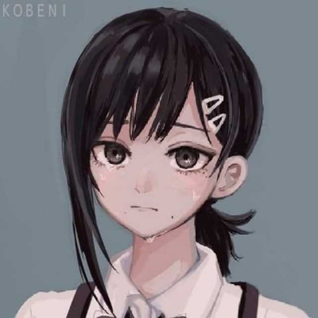

Наши программисты
Совместными усилиями студентов группы СГТ-320в Петрушова Дмитрия Владимировича и Льва
Сергеевича Пуреля была разработана страница, на которой они воплотили
свои знания и навыки. Дмитрий, имеющий опыт в изучении фонетики китайского языка, внес вклад,
определяющий основную логику страницы, заключаящуюся в обработке слогов и преобразованиях между
различными системами транскрипции.
Лев, в свою очередь, сфокусировался на разработке фрагментов, которые не зависят от особенностей
китайского языка. Он ответственен за обеспечение удобства пользования функциальностью сайта, включая
скрипт для вставки различных символов IPA, что позволяет
пользователям не волноваться о трудностях ввода подобных знаков.

Наши дизайнеры
Студентка группы СГТ-320в Александра Валерьевна Исаева является нашим единственным
дизайнером, и она внесла
значительный вклад в создание страницы, разработав цветовую схему, которая
применяется на сайте, подобрав соответствующие иконки для перехода по страницам и внимательно
рассмотрев многие варианты шрифтов и выбрав лучшие размеры для них.
Благодаря творческому таланту и профессионализму Александры Валерьевны Исаевой, наша страница
приобрела эстетически приятный дизайн, который не только улучшает визуальный опыт
пользователей, но и обеспечивает легкость использования и понимания контента.
Наши тестировщики
Александра Валерьевна Исаева, помимо своей роли в качестве дизайнера, активно
участвовала в тестировании сайта и скрипта под руководством Дмитрия. Она также сотрудничала со Львом,
чтобы убедиться в правильности вставки символов.
Кроме того, Алексей Александрович Чёрнобровкин, студент группы СГТ-320в, взял на себя
ответственность за проверку корректности ссылок, привязки файлов и других важных деталей. Он
внимательно следил за тем, чтобы все ссылки работали должным образом, файлы были доступны и все
мелкие детали были учтены для обеспечения плавного функционирования сайта.
Использованные ресурсы